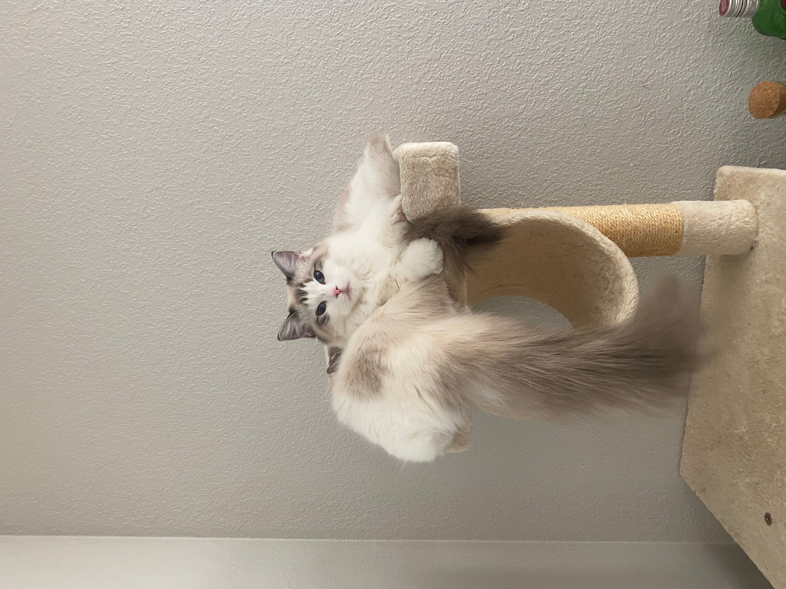

We are a Bay Area ragdoll cattery. Get your ragdoll kittens now!
[Retired] Queen Bayliss: Seal Lynx Bicolor


You know there is always one beautiful girl in your high school? You don't know her, but you heard of how pretty she is? (If that's you, congratulations!) That's Bayliss. My mom can never remember her name, but she alwasy asks me "How is your little butterfly kitten doing?". Bayliss is the only lynx girl of the family. Lynx is a dominant gene, so I am hoping for more lynx babies from her.
One day, I noticed that there was dirt on the floor. It was too little to be caused by the dogs, so I kept an eye on the cats. It turned out Bayliss was very interested in the plant food sticks I put into my plants, so SHE DUG THEM OUT! I didn't know a cat would dig things from the soil.